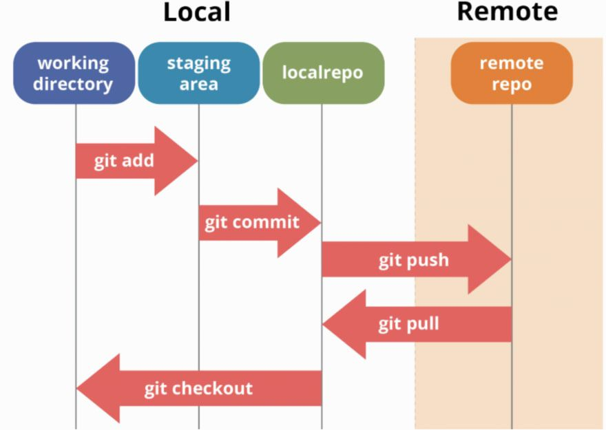

HTML
- The head element contains information about the webpage.
- The body element represents the visible content shown to the user.
- p means paragrah, h1 - h6 are the different size of heading
- ol = ordered list, ul = unordered list, inside the contain li (lists)
- img src="./assets/any-example.png" alt="description of the image." inside arrow brackets for relative images
CSS
- link the stylesheet, by adding a link element inside the head element and after the meta tags
- link rel="stylesheet" href="./assets/style.css" inside arrow brackets
- width is a percentage of the available width
- A margin indicates how much space we want around the outside of an element.
- A padding indicates how much space we want around the content inside an element.
- Box-Shadow adds a shadow effect around an elements frame, being x-axis, y-axis and colour hex
Git
- Gitflow steps: Add, Commit (to local repo/feature branch),
- Push(to git hub) then do a pull request and merge with main branch (on git hub)
- git status: checks what branch we are currently on
- git checkout -b branch-name: creates a new branch and switches to it

JavaScript
- in VS Code and add the following code under the footer element and above the closing element for body: script src="./assets/script.js" in outward facing arrow brackets
- Control+Shift+I to open a console window in chrome developer tools